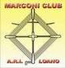

Marconi: Marconi Club ARI Loano
Founded in 1988 by a few Morse enthusiasts in Loano, Italy in order to
honor Guglielmo Marconi who contributed a lot to radio technology and who
promoted the use of Morse telegraphy.
The objective is to gather active CW operators to honor the name of Marconi.
The Italian word "marconista" is indeed used as a synonym for CW operator
but in the context of the club "Marconista" is a title granted to the
club members.
Even the names Maria Cristina Marconi and Elettra Marconi can be found as
activists in the club record.